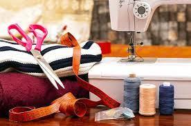

مَعرض الصور
بَعض الصور لخياطة الملابس

خياطة
{kind=link}
{kind=link}

الخياطة هي عملية ربط الملابس أو الجلود أو الفرو أو المواد المرنة الأخرى ببعضها البعض باستخدام إبرة وخيط. وفي معاجم اللغة نجد خَاطَ الثَّوْبَ أي ضَمَّ أجْزَاءهُ بِخُيُوطٍ تَحْمِلُهَا إِبـْـرَةٌ، فيكون الثوب مَخِيط ومَخْيُوط. يعود استخدام الخياطة إلى العصور الحجرية (30000 سنة قبل الميلاد). وقد سبقت الخياطة نسج الملابس. وارتبط تطور هذه الصناعة دائما بتطور النسيج.
وتستخدم الخياطة أساسا لإنتاج الملابس والمفروشات المنزلية مثل الستائر، وفرش الأسرة، والتنجيد، وبياضات الموائد. وتستخدم أيضاً من أجل أشرعة السفن، والأعلام، والبنى الأخرى المكونة من مواد مرنة مثل الجلود.
يخيط بعض الناس الملابس بأنفسهم لهم ولعائلاتهم. وتكون الخياطات المنزلية عادة بغاية إصلاح الملابس، مثل إصلاح درزة ممزقة أو استبدال زر مفقود. ويسمى الشخص الذي يتخذ من الخياطة مهنة له بالخياط.
وينظر أحياناً إلى الخياطة على أنها صنعة لا تحتاج إلى الكثير من المهارة، إلا أن تحويل القماش المسطح إلى ملابس تحتوي العديد من الثقوب والشقوق والانحناءات والطيات بطريقة معقدة يتطلب مستوى عال من المهارة والخبرة لتحويل القماش إلى تصميم ناعم خال من التجاعيد والتموجات. وتضيف الرسوم الموجودة على القماش مزيدًا من الصعوبة إلى هذه الصنعة.
اولاً : أدوات التفصيل - المقص الكبير - المقص الصغير - المقص الشرشر ( السورفليه )- المقص الكهربائي ثانياً : أدوات القياس - شريط القياس - القياس الضابط - آلة ضبط الذيل - المسطرة ثالثاً :أدوات عمل العلامات والإرشادات : 1 ـ عجلة ( عجلة مسننة لأخذ العلامات ) : وتستعمل هذه الآلة في عمل العلامات على القماش بعد وضع النموذج الورقي عليه ، وذلك بإمرارها حوله لتحديد العلامات ، ولا يستعمل الروليت الا للأقمشة القطنية وبعض الأقمشة الحريرية وتستعمل بخفة في حالة الأقمشة الحريرية 2 ـ الطباشير ( المارك ) : ويكون عادة إما بشكل مستدير ‘ وإما على شكل قلم رصاص ، وهو يصنع من الشمع أو الصلصال ويستحسن استعمال النوع المصنوع من الصلصال لأن مادته يمكن ازالتها بسهولة ، أما النوع المصنوع من الشمع فقد يترك أثراً دهنياً عند استعماله ، أما إذا استعمل مع الأقمشة الصوفية فيمكن إزالة أثر الشمع بالمكواة الساخنة 3 ـ ورق الكربون : رابعاً : أدوات الخياطة : 1 ـ الإبر 2 ـ الدبابيس 3 ـ الكشتبان ( القمع ) 4- الدباسة 5- خيط السراجة 6- الأزرار وأدوات الإقفال 7- السحابات
ماكينة الحياكة متعددة الأنواع والأشكال ، وهي من أهم الأدوات المستعملة في الحياكة ، ومنها ما يُدار باليد ومنها ما يُدار بالقدم وجميعها تعمل غرزة النباتة العادية. وهناك أنواع تعمل غرز التطريز كما تعمل العراوي وتركيب الأزرار بالاضافة الى الغرزة العادية , ولإتقان أستعمال ماكينة الحياكة بمهارة ينبغي عليكِ التدريب على كافة أستخداماته ومن الأجزاء الرئيسة في الماكينة • الجزء العلوي • العجلة • الرأس • الوجه • القاعدة • عجلة اليد • القدم الضاغطة • المغذي ( أسنان الماكينة ) • المكوك. - لخياطة خط مستقيم نضغط بخفة على الموتور ونكمل العمل ولتوقف ويجب عدم السرعة في حياكة جزء طويل مرة واحدة بل من المفضل حياكته على مراحل - أثناء الحياكة في خط منحني يلزم تحديد الخط على القماش اولاً بالرسم او بغرزة السراجة ثم المشي ببطء حتى تتمكنين من التحكم في عمل الدوران - عند عمل حياكة على شكل زاوية قائمة يحدد الخط المراد حياكته بالرسم الخفيف ثم يوضع من أوله تحت الإبرة ويبدأ بتحريك الماكينة بالطريقة العادية وعند الوصول لنقطة الزاوية تترك الإبرة مثبتة في القماش .
تتكون الأقمشة من خيوط طولية تتقاطع مع خيوط عرضية لتكون النسيج وتسمى بالألياف ومن هنا تنقسم الأقمشة حسب مصدرها الى الياف تؤخذ من مصدر طبيعي مثل : القطن ـ الحرير الطبيعي ـ الصوف الكتان ( التيل ) ألياف تؤخذ من مصدر صناعي مثل : الرايون ـ الأكريلك ـ الداكرون ـ النايلون وهناك ألياف صناعية خالصة مثل البوليستر وألياف نصف صناعية او مخلوطة مثل التترون الأسماء التجارية للأقمشة : توجد في الأسواق أقمشة متعددة بعضها طبيعي وبعضها صناعي وتباع تحت اسماء مختلفة المجموعة الأولى : قطن ـ حرير طبيعي ـ فوال او ويل ـ كتان ـ ساتان ـ كريب ( جورجيت ) جميعا تشترك في صفات واحدة وتميز بالنعومة وسهولة إحتكاكها بالجسم وتشربها للعرق المجموعة الثانية : ترجال ـ داكرون تريفيرا ـ شيفون جميعها تنتسب الى فئة الألياف الصناعية الخالصة وتسمى تجارياً بأقمشة البوليستر وتجمعها صفات واحدة كالمتانة ومقاومة التجعد والكرمشة والانكماش كذلك تتميز بالمعان وتعدد الألوان المجموعة الثالثة : صوف ـ قطن ـ مخمل ـ اكريلك ـ نايلون بعضها طبيعي وبعضها صناعي
قبل خياطة القماش على الماكينة يجب تسريج القماش على اليد لضبطه بعض الغرز 1- السراجة العادية تعمل بخيط فردى بطول واحد او غرزة طويلة وغرزتان قصيرتان تستعمل عند تركيب الوصلات او ثنية الذيل الطريقة : نعقد الخيط ونبدأ من اليمين الى اليسار بعمل غرزة طويلة وأخرى قصيرة . 2- غرزه النباتة هى غرزة قوية تحل أحياناً محل غرزة الماكينة فى المواضع الدقيقة التى لا يمكن أستعمال الماكينة فيها الطريقة : نثبت البداية بعمل غرزتين بسيطتين أحداهما فوق الأخرمبتدئة من اليمين أغرزي الأبرة على بعد خيطين أو ثلاث (من القماش) يمين غرزة التثبيت ثم أخرجيها يسار غرزة التثبيت بمقدار خيطين او ثلاث شدى الخيط أغرزي الأبرة ثانية فى نهاية الغرزة السابقة وأخرجيها على مسافة تعادل طول الغرزه السابقة . 3- غرزة اللفق تستعمل لخياطة الذيل وتثبيتة ويبدأ من اليمين إلى اليسار الطريقة : يلقط خيط واحد من القماش ثم يؤخذ طرف ثنية الذيل على الأبرة ثم تسحب : المقاسات • دوران الصدر • دوران الوسط• دوران الحوض • طول الظهر • طول الجنب • دوران الرقبة • طول الكتف • عرض الظهر
{kind=link}
{kind=link}
{kind=link}
{kind=link}
{kind=link}
{kind=link}